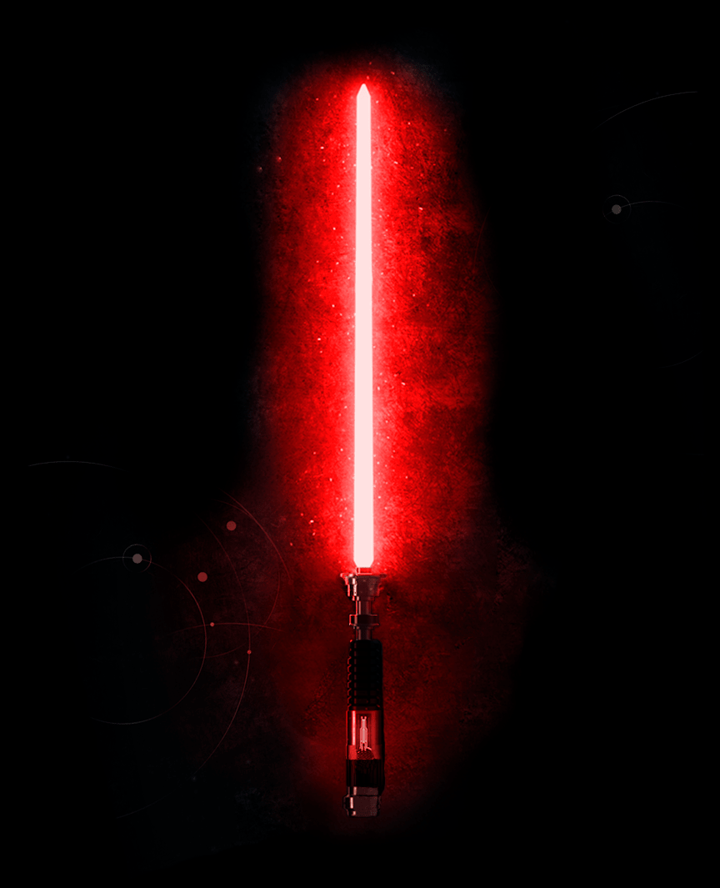
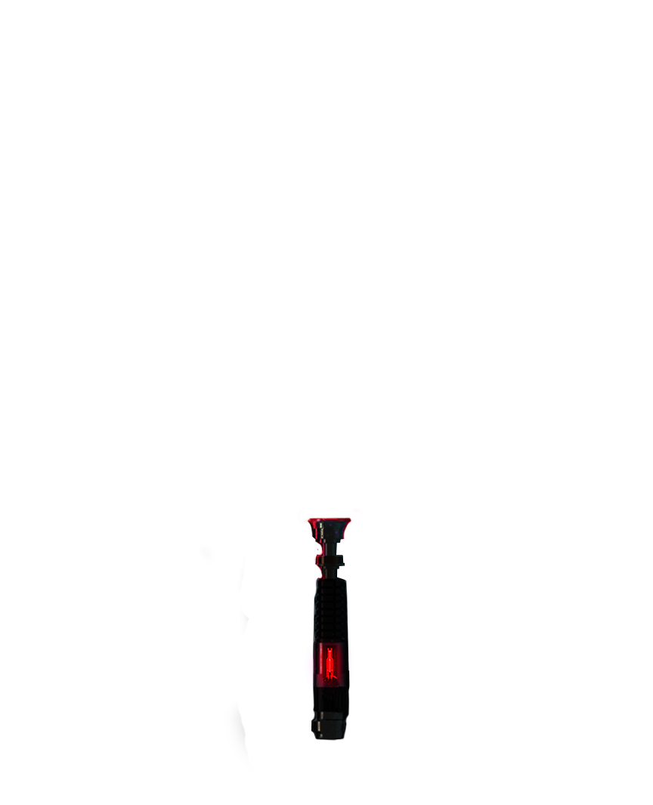

darth tyrannus
lightsaber


description
Dooku's lightsaber, also known as Darth Tyranus's lightsaber or Dooku's Sith lightsaber, was the personal curved-hilt lightsaber of Dooku, the Count of Serenno. The former Jedi Master, who became Darth Tyranus and the political leader of the Separatist Alliance, handcrafted the weapon's unique hilt with a kyber crystal that emitted a red blade.
history
The weapon was built for the purpose of lightsaber combat, and the Sith Lord carried it with him into numerous battles during the Clone Wars, a conflict he and his master orchestrated from both sides. In his final bout, Dooku lost his Sith lightsaber to the Jedi Knight Anakin Skywalker once he was defeated in a duel aboard the starship Invisible Hand.